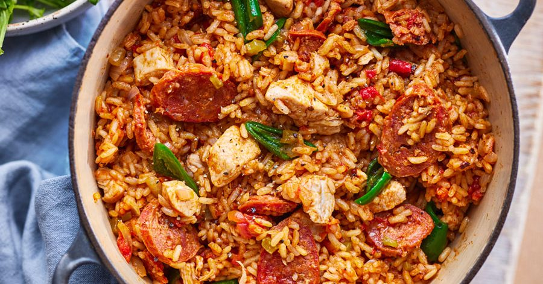

Chicken & Chorizo Jambalaya

Description
A healthy Cajun-inspired rice pot recipe that's bursting with spicy Spanish sausage, sweet peppers, and tomatoes.
Ingredients
- 1 tbsp olive oil
- 2 chicken breasts, chopped
- 1 onion, diced
- 1 red pepper, thinly sliced
- 2 garlic cloves, crushed
- 75g chorizo, sliced
- 1 tbsp Cajun seasoning
- 250g long grain rice
- 400g can plum tomato
- 350ml chicken stock
Steps
- Heat 1 tbsp olive oil in a large frying pan with a lid and brown 2 chopped chicken breasts for 5-8 mins until golden.
- Remove and set aside. Tip in the 1 diced onion and cook for 3-4 mins until soft.
- Add 1 thinly sliced red pepper, 2 crushed garlic cloves, 75g sliced chorizo and 1 tbsp Cajun seasoning, and cook for 5 mins more.
- Stir the chicken back in with 250g long grain rice, add the 400g can of tomatoes and 350ml chicken stock. Cover and simmer for 20-25 mins until the rice is tender.